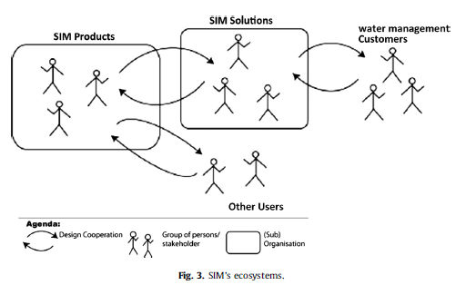
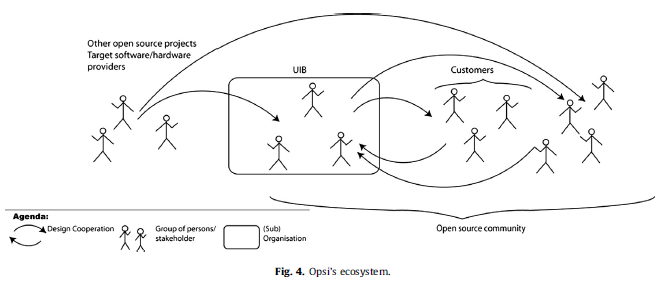

Product support and sustaining engineering concern the continuous improvement of a product after it has been released to the customer base. Defects in the software will continue to arise after product release, as well as the need to add features to your product as you further understand your customers and their evolving needs.
| Lecture Recording | Wednesday, March 9 (mp4) |
| Sustaining Software Engineering | Insights: Day in the Life of a Sustaining Engineer |
| Product Support | What do I do as a Product Manager? |
| 20 Years of Product Management in 25 Minutes by Dave Wascha |
Assignment 3 - Extensions of Three Dimensional Printing and Imaging
The main part of software engineering methods, tools and technologies has developed around projects as the central organisational form of software development. A project organisation depends on clear bounds regarding scope, participants, development effort and lead-time. What happens when these conditions are not given? The article claims that this is the case for software product specific ecosystems. As software is increasingly developed, adopted and deployed in the form of customisable and configurable products, software engineering as a discipline needs to take on the challenge to support software ecosystems.
Question: What is an ecosystem?
Answer: An ecosystem is a geographic area where plants, animals, and other organisms, as well as weather and landscape, work together to form a bubble
of life. Ecosystems contain biotic or living, parts, as well as abiotic factors, or nonliving parts. Biotic factors include plants, animals, and other organisms.
Question: What is an ecosystem with regard to software products?
Answer: A software ecosystem is the community of stakeholders that companies create to support platforms. Software ecosystems can be made up of developers,
resellers, customers, software, services, and more.
The analysis results in a set of common features of product development and evolution despite differences in size, kind of software and business models. Design is distributed and needs to be coordinated across heterogeneous design constituencies that, together with the software, build a product specific socio-technical ecosystem. The technical design has to support the deference of part of the development not only to 3rd-party developers but also to local designers tailoring the software in the use organisation. The technical interfaces that separate the work of different design constituencies are contested and need to be maintained permanently. Development takes place as cycles within cycles - overlaying development cycles with different rhythms to accommodate different evolution drivers.
Successful software products are developed and evolved over several decades. The mere survival implies that the organisations developing them have been successful in keeping the development in synch with the developments of the use context supporting not only 3rd party developers but also End User Developers.
Question: Give me an example of a successful software product that has been developed and evolved over several decades.
Answer: Windows, Facebook, Teams (only a few years), Microsoft Office Suite, Adobe Photoshop (a few years), eBay, etc...
Question: How often should a company come up with a novel or unique product to remain in business?
Answer: 7 years.
According to the SWEBOK (Software Engineering Book of Knowledge) chapter on Software Engineering Management, a project provides a closure for the software development, defining borders regarding scope, and then based on the scope: effort and time. Control over scope, effort (translated into expenses) and lead time - at first glance - seem to be in the interest of both the development organisation and the organisation in and for which the software is to be used.
For many contexts in which software is developed, the assumptions behind the project organisation for software development seem to hold. However, already in 1980, the experience with the evolution of the IBM 360 operating system let Lehman to formulate the laws of software evolution. Based on the understanding that the application of software is changing the application domain and with it the problem that the design is based on, Lehman declared that all software that is used experiences pressure for change. He identified a reflexive feedback cycle between usage and the design of software that is responsible for this dynamics.
The research below indicates that with respect to customisable and end-user configurable software products challenge the assumptions proposed by the project organisation of software development further: The delivered product is rather a half product that has to be configured and customised to a specific context. Development takes place through interlacing heterogeneous design and use activities distributed across different design constituencies, assemblies of individual and organisational actors mandating a specific set of design and development decisions. There is no decided beginning of the evolution, and the goal is to keep the product useful and attractive to its users over a long time, rather than delivering it once. Continuous contact with users and customers is crucial. As the use contexts change, the evolution of software products to keep in synch with the application domain developments requires continuous effort. The maintenance and communication of design and architectural knowledge take place in an informal manner. The development takes place in interlaced cycles of versions, service packs and long-term efforts that address the improvement of the overall design.
UIQ develops a user interface framework plus an application suite for high-end mobile devices that include a phone. The interface platform and the application suite are based on the Symbian operating system. UIQ also develops specific applications for their customers, the producers of mobile phones. These producers, e.g., Motorola and Sony Ericsson, which owned UIQ, develop their own applications based on the UIQ platform.
Another group of customers are software developers that develop independent software using the UIQ platform based on a licensing scheme. The telephone companies develop several series of mobile phones based on the same version of the UIQ platform. Mobile phones are seldom updated, once they are sold. If so - e.g., by downloading a new version from Sony Ericsson's home page - the whole technology stack is exchanged.
UIQ is not directly selling to users of mobile phones, and few phone users are aware that they are using UIQ's software. Nonetheless, usability is an important quality. The interaction design team members therefore have built up a network of pilot users whom they consult for usability tests and long term usability studies. Fig. 1 presents UIQ's ecosystem.

Question: Look at the article UIQ Technology.
UIQ failed. Why?
Answer: Consolidated, replaced by the S60 platform.
Question: Watch the video SymbianOS Re-Imagined - Concept.
Do you think SymbianOS has a chance of coming back?
Answer: It says it is inspired by so many operating systems. Does not seem innovative or new. It has not advantages
or nothing new compared to iOS or Android. The Android and iOS ecosystem are just too strong now.
The Microsoft Dynamics development organisation is part of the Microsoft concern developing business solutions that use Enterprise Resource Planning (ERP) systems for different market segments. Dynamics Nav is one of these ERP systems. There are about 200 people involved in the development. At the time of the interview, a proprietary base technology was being replaced with a Microsoft compatible base.
The base software is adapted to the legislation in different countries, and is configured and customised to the specific organisation by partners, that is consultancies specialising in implementation and adaptation of Microsoft ERP systems. To do so, the partners have access to a development environment where they can adjust any part of the application. The term framework is used to describe the programming language and modelling base. Both are used to implement the application, the runtime system and the development environment. Fig. 2 shows Dynamics Nav's ecosystem. It differs from a similar one published, as it here focuses on the aspects of the ecosystem that became apparent in the interviews.
Question: What is an Application Programming Interface (API)?
Answer: An API is a connection between computers or between computer programs. It is a type of software interface,
offering a service to other pieces of software.
Question: What concept in object oriented programming with C++ lends itself very well to software frameworks?
Answer: Templates.
Question: What is the Active Template Library? (See
10 top-notch libraries for C++ programming).
Answer: Active Template Library (ATL) is a set of C++ classes for building COM (Common Object Model) objects,
with support for COM features such as dual interfaces, standard COM enumerator interfaces, connection points, and ActiveX controls.
Question: What is the Asio C++ Library? (Also see
10 top-notch libraries for C++ programming).
Answer: The Asio C++ library is used for network and low-level I/O programming, offering a consistent asynchronous model. Providing basic building blocks for concurrency,
C++ networking, and other types of I/O, Asio has been used in applications ranging from smartphone apps and games to highly interactive websites and real-time transaction systems.
Water and Environment Simulation2 (SIM) is a Danish not for-profit organisation whose headquarters is situated in a university related science park outside of Copenhagen. It started as a spin-off of a hydraulics department of the Technical University of Denmark. SIM offers consultancy and software services related to water and environmental issues. The consultancy is partly based on hydraulic simulation software that is also sold as software products.
Traditionally the software has been used in consultancy projects resulting in a report based on simulation runs. Through a graphical user interface, a hydraulic system is defined. In the case of one-dimensional simulations, the system consists of a network describing the waterways along with various other parameters describing the system, e.g., vents and locks influencing the flow of the water in specific points. The system definition, along with temporally varying data about inflow into the system, is used as input data to the so-called simulation engines. The simulation engines are solvers of differential equations describing the physics of the system. The results of the system are typically time series of water level and discharge at various locations in the system. Originally, SIM's business was centred around consultancy and system development based on the software products. Hydraulic engineers and water management experts use the software to produce studies evaluating the result of changes to a water system. This can be the river dams for energy production, the effect of changes to a city's water supply or sewer system, or the stratification of rivers. One of the more high profile projects was the evaluation of the effect of the Øresund bridge and tunnel between Denmark and Sweden on the water exchange between the Baltic and the North Sea.
Question: What is a differential equation?
Answer: In mathematics, a differential equation is an equation that relates one or more unknown
functions and their derivatives. In applications, the functions generally represent physical
quantities, the derivatives represent their rates of change, and the differential equation d
defines a relationship between the two.
Over time, the software has been used more and more to support control systems for e.g., water supply and sewage systems, so called 'on-line' systems. Here the simulation runs continuously, partly based on real time measurements from the water system. Results of the simulation are not only used to monitor the water system but also directly or indirectly - via an operator - to control the water system. Here the software and a number of tools are used as a set of frameworks to develop a custom monitor and control system. This change in usage leads to a different set of requirements, e.g., different simulation engines might have to be integrated. The company took part in a European project developing a standard for interfacing simulation engines. When new modelling elements are needed, the software is customised, that is, the source code is changed. The customisation is done by the hydraulic engineers who have basic programming skills. Although the software is mainly used by internal consultants, it is also sold as a product to both consultancies and end-user organisations.
Question: Can you think of another application for water simulation?
Answer: Electronic circuits. The differential equations for water flow and electron
flow are quite similar. Besides, this simulation software involves software, differential equations,
and machine learning. These are quite applicable in other contexts.
Question: Would the Software Defined Network approach be useful for the control and routing of water?
Answer: Depends on the complexity, maybe so. We might have to shut parts off centrally.
In addition to developing customer specific GIS based application, the Umwelt Informatik Büro (Environmental Informatics Office, UIB) supports, maintains and evolves an open source product (OPSI http://www.opsi.org/) steering the distribution of software in a local area network. It is situated in Mainz, one of the German regional capitals. The first version of the software was developed for a regional environmental agency between 1995 and 1998. As the software was built upon other open source products, the decision to run it as an open source product 'was nearly legally necessary.' The company lives today from offering courses and support contracts for the product and customer specific contract development that feed into the open source line; it also uses the product itself doing system administration for governmental agencies; the users who are part of the open source community share procedures handling background installations of specific programs.
About 20 governmental agencies and smaller companies are paying customers, that is, have signed a support contract and, in some cases, sponsor development projects of different sizes. At the time of the interview, another 40 system administrators download the software and the user documentation and handle the installation and use themselves. The software fills out a market niche, as competitive off-the-shelf products are too expensive for small companies. The German government has decided on a policy to use open source products where possible.
At the time of the interview, two and a half persons work on the maintenance and evolution of the software; two developers and the head of development and managing director of the company are the ones mainly responsible for major developments and support. About four to five persons work with customer specific system administration, often sitting directly at the customer's site. Three persons work with customer specific GIS applications, and two mainly work with administration and accountancy. As the company has an active policy to support flexible working times, this does not necessarily mean that the company has 12 full time employees. However, apart from the main development group, the internal users and the open source community members are invited to contribute to the development, and they do so from time to time.
Question: What are some advantages of
open-source software development?
Answer: bug fixes - many eyes on the code. See
8 advantages of using open source in the enterprise. Open source code is a great way to win contracts with customers.
Question: What are some advantages of proprietary software?
Answer: Security. See Why do you need to build proprietary software?. Profitable.
Protection of trade secrets.
The main contribution of this article is the presentation of common features of product development and evolution in four companies. Although size, kind of software and business models differ, the commonalities are striking:
The empirical material provides a rich bouquet of different practices highlighting their specific advantages and disadvantages. Much of what is reported is not supported by the software engineering textbooks, but makes perfect sense, considering that the frame of reference for product development is not a project - defined by a fixed scope, time and design constituency - but continuous innovation across the respective ecosystem. As software is increasingly developed, adopted and deployed in the form of customisable and configurable products, software engineering as a discipline needs to take on the challenge to support this way of organising software development with methods, tools and techniques. Our result indicates that software ecosystems challenge some of the very core assumptions of traditional software engineering.
Question: What is the traditional assumption?
Answer: That software products are project based - a definite beginning and
a definite end.
The discussion highlights some of these challenges: keeping contact with other actors in the ecosystem, techniques to support multilevel development and evolution, managing an overlay of development cycles with different rhythms, and documentation and modelling support for continuous development. Projects, however, still exist as a way to provide temporary closure and are defined where they are deemed necessary.